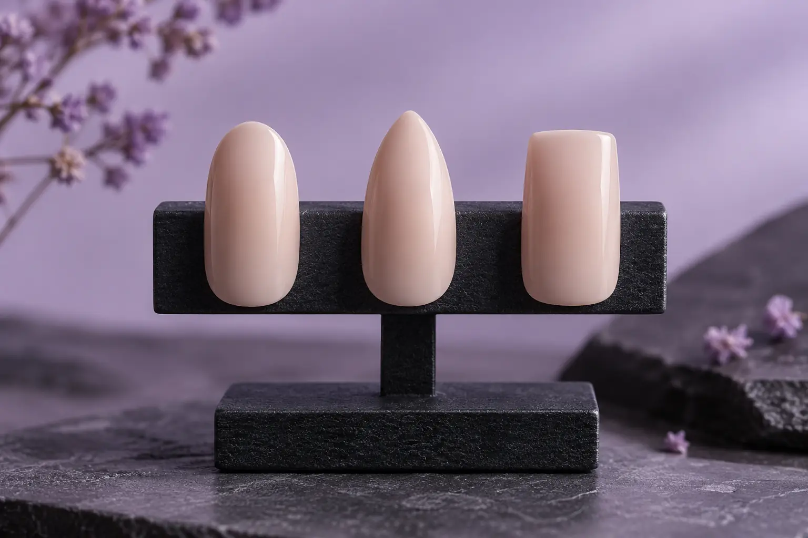
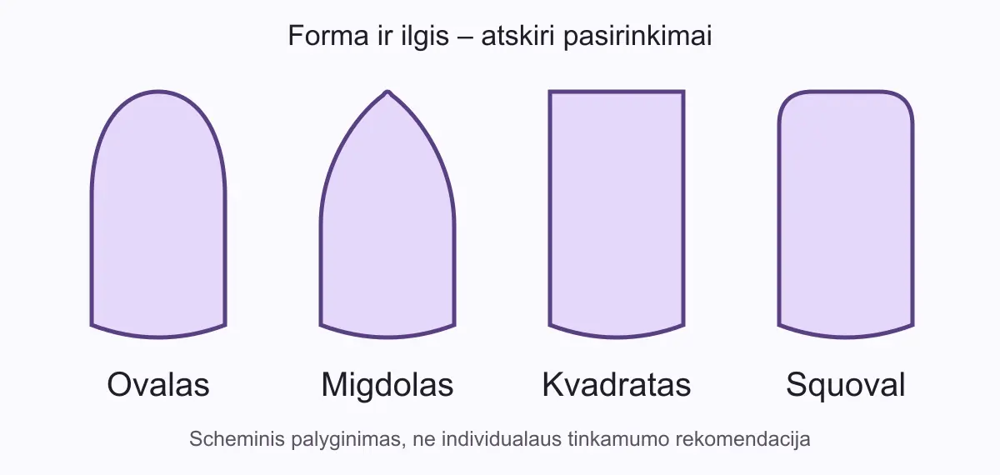

Nagų forma ir ilgis: ovalas, migdolas, kvadratas ir kasdieniai poreikiai
Autorius: Madbeauty redakcija · 2026 m. gruodžio 24 d. 16:00 Lietuvos laiku
Palyginkite ovalo, migdolo ir kvadrato kontūrus, tada pasirinkite ilgį pagal norimą vaizdą ir kasdienes veiklas. Nėra vienos formos ar ilgio, kuris tiktų visiems.

Pirmiausia rinkitės kontūrą, o ilgį vertinkite atskirai. Ovalo ir migdolo laisvas kraštas siaurėja ir apvalėja, kvadrato – baigiasi tiesia linija, o squoval variante tiesi linija derinama su sušvelnintais kampais. Tą patį kontūrą galima derinti su skirtingu ilgiu; pasirinkimą verta sieti su norimu vaizdu ir tuo, kiek norite prie jo pratintis. Nėra vienos formos, kuri būtų geriausia visiems. OPI formų aprašymai padeda atskirti šiuos kontūrus.
Kuo skiriasi kontūrai
- Ovalo kraštas primena pailgą, apvalų kontūrą. Jis tinka palyginimui, jei norite minkštos linijos be ryškiai tiesaus galo.
- Migdolo forma siaurėja į suapvalintą viršūnę. Ji aiškiau pailgina siluetą; tai vizualus apibūdinimas, o ne pažadas, kaip forma atrodys ant kiekvieno nago.
- Kvadrato kraštas tiesus, kampai aiškesni. Squoval išlaiko tiesesnį galą, bet kampai sušvelninti.
Vienodo mastelio kontūrų schema padeda palyginti formas nekeičiant nagų ilgio: matyti, kur linija siaurėja, kur baigiasi tiesiai ir kiek suapvalinti kampai. Ji vaizduoja kontūrą, o ne nurodo, kuris variantas tinkamiausias konkrečiam žmogui.

Laisvo krašto ilgis – atskiras pasirinkimas
Trumpesnis, vidutinis ar ilgesnis kraštas pirmiausia keičia, kiek nago silueto matoma. Šie žodžiai čia yra palyginimo gairės, ne tikslūs ar visiems vienodi matmenys. Ilgesnis kraštas išryškina formą, tačiau gali pareikalauti daugiau įpratimo atliekant užduotis, kuriose dažnai naudojami pirštų galiukai. Vertinkite ir tai, kiek laiko norite skirti kasdienei priežiūrai.
Palyginkite vieną dalyką vienu metu
- Pasirinkite du kontūrus, bet palikite tą patį ilgį. Pavyzdžiui, palyginkite trumpą ovalą su tokio pat ilgio squoval.
- Tuomet palyginkite ilgį nekeisdami kontūro. Taip lengviau pastebėti, ar labiau patinka pats kraštas, ar jo ilgis.
- Tik po to pridėkite spalvą ar dizaino akcentus. Jie keičia bendrą vaizdą, todėl iš karto keičiant ir formą, ir ilgį, ir dizainą sunkiau suprasti, kas patiko.
Pavyzdys: jei norite švelniai apvalaus krašto, bet nenorite iš karto pratintis prie ilgesnių nagų, pirmiausia palyginkite trumpą ovalą ir trumpą squoval. Jei norite aiškesnio siaurėjančio kontūro, panašaus ilgio migdolą vertinkite kaip atskirą variantą. Tai palyginimo būdas, ne universali rekomendacija.
Forma nepakeičia nago būklės įvertinimo
Kontūras ir ilgis nepasako, ar nagui tinka dirbtinė danga ar konkreti paslauga. Amerikos dermatologų akademija pataria neslėpti nago problemų dirbtiniais nagais ir dėl sveikatos problemų kreiptis į gydytoją; priemonės taip pat gali sukelti reakcijų. AAD manikiūro saugos gairės
Procedūrų aprašai kataloge: Dizainas. Miestą ir realaus teikėjo pasiūlymą pasirinkite kataloge, kai tokia pasiūla pateikta.
Susiję gidai
Šaltiniai
- OPI · nagų formų kontūrai · www.opi.com
- AAD · manikiūro ir pedikiūro sauga · www.aad.org